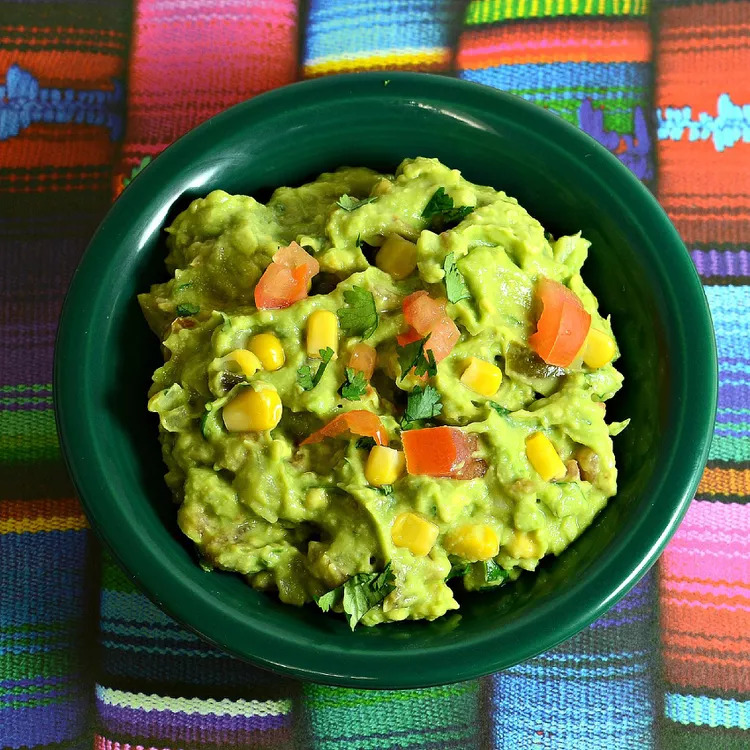

Guacamole with Corn

Description
This easy Mexican guacamole with corn (guacamole con elote) and tomatoes tastes great with corn chips. As with all guacamole recipes, make sure you are using ripe avocados.
Ingredients
- 3 large avocados - peeled, pitted, and mashed
- 1 lime, juiced
- salt to taste
- 1 large plum tomato, seeded and chopped
- ½ white onion, chopped
- 1 serrano chile, seeded and finely chopped
- 2 tablespoons chopped fresh cilantro
- 1 tablespoon olive oil
- 1 (8.75 ounce) can whole kernel corn, drained and rinsed
Steps
- Mash avocados, lime juice, and salt together in a medium bowl.
- Mix in tomato, onion, serrano chile, and olive oil.
- Stir in corn kernels.
- Serve immediately.
Back to recipes